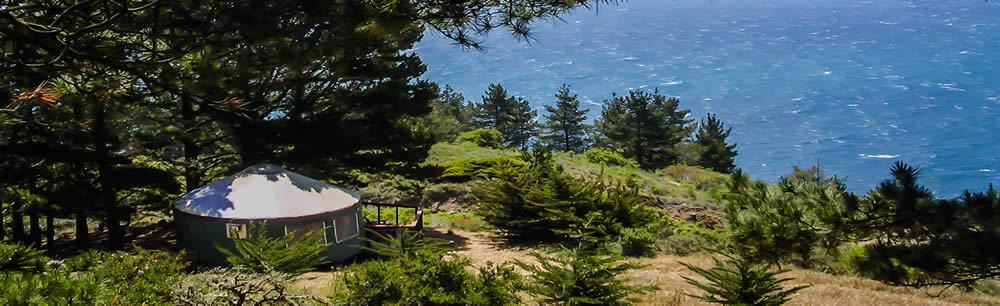

The Yurts at Pacific Trails
- What is a yurt?
- Our luxury yurts are permanent structures four feet off the ground. Each yurt has canvas walls, a wooden floor, and a roof dome that can be opened.
- How are the yurts furnished?
- Each yurt is furnished with a queen-size bed with down quilt and gas-fired stove. The luxury camping experience also includes electricity and a sink with hot and cold running water.
- What should I bring?
- Bring comfortable walking shoes and dress for changing weather with layers of clothing.
12010 Pacific Trails Road
Zephyr, CA 95555
888-555-5555